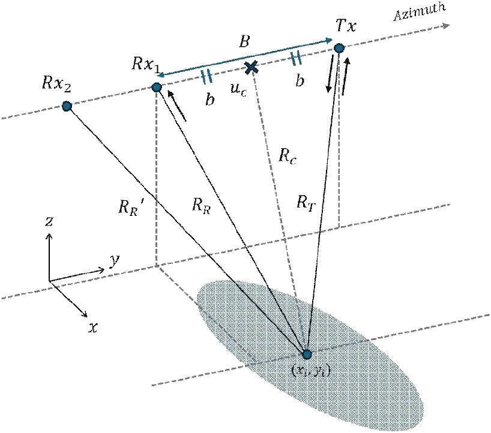

연구실적 · 국내전문학술지
멀티스태틱 SAR에서 공통 희소성 기반 압축센싱을 이용한 영상 복원 성능 향상
Joint Sparsity-Based Compressive Sensing for Improved Target Detection in Multistatic SAR Imaging
 DOI
DOI PDF
PDF
초록
본 논문에서는 다중 플랫폼을 운용하는 멀티스태틱 SAR(synthetic aperture radar) 영상의 활용도를 높이고, 효율적인 표적 식별을 수행하기 위해 공통 희소 신호 기반의 압축센싱 복원 알고리즘을 적용한다. TanDEM 모드 활용을 위한 근사적 SAR 영상 생성 기법을 제시하고, 확보된 멀티스태틱 영상에서 산재 표적을 추출하기 위해 SMV-CS 및 MMV-CS 기법을 적용하여 복원 과정에서 기대할 수 있는 표적 복원 및 잡음 억제 성능 효과를 분석한다. 점 표적 기반 SAR 영상 모의실험을 통해 제안 알고리즘의 정량적 성능을 평가하고, 이를 검증하기 위해 차량 기반 SAR 실험을 수행하여 확보한 실측 데이터에 적용한다. 실험적으로 확보한 다중 멀티스태틱 SAR 영상에 MMV-CS 기법을 적용함으로써 표적 식별의 신뢰도를 개선할 수 있음을 보인다. 이를 통해 향후 군집 위성과 같은 다중 플랫폼 SAR 운용 체계에서 생성되는 복수의 멀티스태틱 SAR 데이터를 통합함으로써 얻을 수 있는 이점을 제시한다.
사이트 원문 표기
Hee-Woo Lee (이희우), Yong-Sun Yoo (유용선), Ji-Hwan Cheong (정지환), Chan-Hee Lee (이찬희), Woo-Kyung Lee (이우경), “멀티스태틱 SAR에서 공통 희소성 기반 압축센싱을 이용한 영상 복원 성능 향상”, 한국전자파학회논문지, 제36권 3호, 2025년
BibTeX
@article{Lee_2025,
title={Joint Sparsity-Based Compressive Sensing for Improved Target Detection in Multistatic SAR Imaging},
volume={36},
ISSN={2288-226X},
url={http://dx.doi.org/10.5515/kjkiees.2025.36.3.291},
DOI={10.5515/kjkiees.2025.36.3.291},
number={3},
journal={The Journal of Korean Institute of Electromagnetic Engineering and Science},
publisher={Korean Institute of Electromagnetic Engineering and Science},
author={Lee, Hee-Woo and Yoo, Yong-Sun and Cheong, Ji-Hwan and Lee, Chan-Hee and Lee, Woo-Kyung},
year={2025},
month=Mar,
pages={291–303}
}